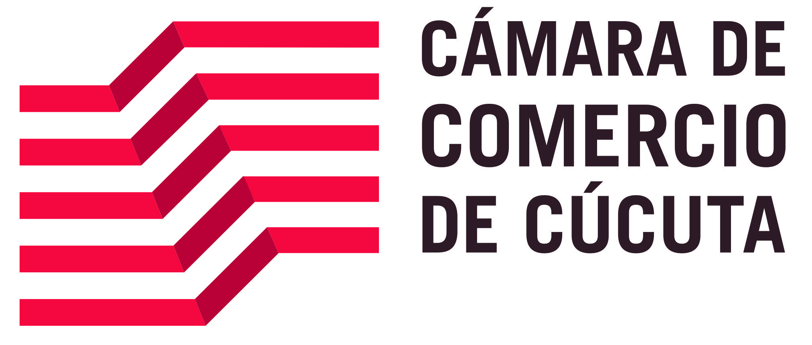
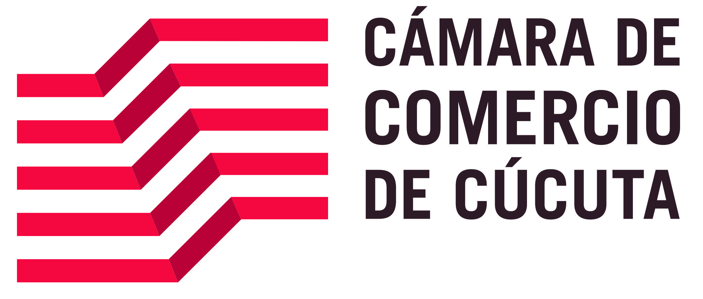

MinTIC abre convocatoria de Apps.co para emprendedores digitales del país
23 de marzo de 2017. Los equipos participantes recibirán acompañamiento para fortalecer su modelo de negocio.... leer mas
 


23 de marzo de 2017. Los equipos participantes recibirán acompañamiento para fortalecer su modelo de negocio.... leer mas

28 de febrero de 2017. Hasta el 1° de marzo, seis emprendimientos de la iniciativa Apps.co del Ministerio TIC estarán representando a Colombia en Four Years From Now (4YFN)... leer mas

En el congreso mundial de móviles participaron 26 empresas colombianas de la industria de tecnologías de la información y de contenidos digitales y seis equipos de emprendedores del programa gubernamental Apps.co.... leer mas

Hasta el próximo 14 de julio de 2017 habrá plazo para que empresas digitales del país hagan parte del proceso de acompañamiento en la fase Crecimiento y Consolidación de Negocios TIC de Apps leer mas

Esta iniciativa la llamada Launchpad es impulsada por el programa de la entidad estatal Apps.co, y busca apoyar distintos emprendimientos colombianos para escalar sus plataformas y aplicaciones de forma exitosas. leer mas